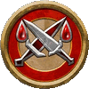

游荡者
Rogue
你们技巧精熟而又擅长投机，你们用敏锐的头脑赖在对方失误的时候痛击敌人。你游走在危机边缘，从而找寻刺激并测试自己的技巧，而且可能不太关系法律对你的阻碍。每一个游荡者独一无二的道路都充满着危险，但你们身上的共同点是你们在技能训练的广度和深度。
关键属性 Key Ability
敏捷或其他
在1级时，你的职业给你在敏捷或是你的游荡者诡术所提供的选项上的一次属性提升
生命值 Hit Points
8 + 你体质调整值
你在1级和之后的每个等级，将你的最大生命值增加这个数值
- 初始熟练 Initial Proficiencies
- 1级时，你在下面这些数据上获得所列的熟练等级。你在任何未列出的项目上都是未受训，除非你通过其他方式获得了更高的熟练等级。
- 察觉 Perception
- 察觉-专家
- 豁免骰 Saving Throws
- 强韧-受训，反射-专家，意志-专家
- 技能 Skills
- 隐秘-受训，在游荡者诡术所决定的一个或多个技能上受训，在数量等于7 + 你智力调整值的额外技能上受训
- 攻击 Attacks
- 简易武器-受训，细剑、闷棍、短弓和短剑-受训，无武装攻击-受训
- 防御 Defenses
- 轻甲-受训，无甲防御-受训
- 职业DC Class DC
- 游荡者职业DC-受训
在战斗遭遇中…… During Combat Encounters...
你隐秘的移动，一边可以神不知鬼不觉的接近敌人。你是一台精密的机器，比起普通的士兵，你更擅长对付那些强大的头目或是远方的施法者。
在社交遭遇中…… During Social Encounters...
你的技能给你提供了多种可以用来影响你敌人的工具。骗取情报和搜查信息是你的第二天性。
在探索中…… While Exploring...
你可以偷偷地去发现敌人并寻找危险或陷阱。你非常有价值，因为你可以解除陷阱，处理难题，预测危险。
在休整期内…… In Downtime...
你可以选择扒口袋或是违禁品交易。你也可以选择成为游荡者工会的一员，亦或者是自己创建一个。
你可能…… You Might...
- 通过认真的训练来磨练你的技能，无论是为了自己还是这个世界。
- 知道哪里可以购买违禁品。
- 因为你认为法律毫无意义或是有自己的原则而违背法律。
其他人也许…… Others Probably...
- 认为你仅仅是受贪婪驱使。
- 认为你魅惑而又迷人，尽管他们认为他们不会上你的当。
- 当需要冒险或是违背法律的时候找到你。